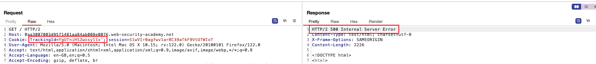
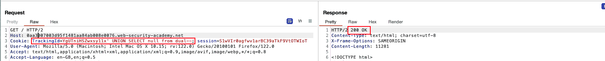
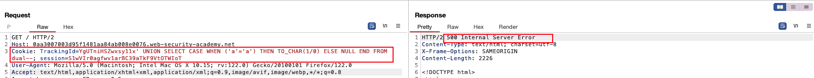
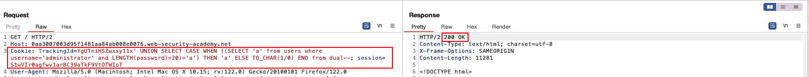
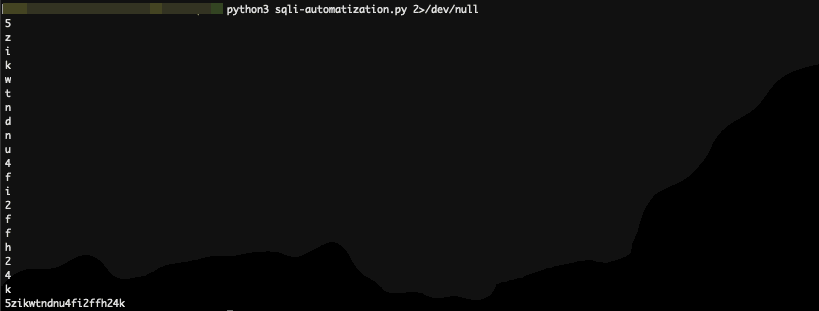

WSA: Blind SQL Injection with conditional errors
Introduction
I feel like much of the process I made during the last year, even though significant was disorganized and chaotic. I have reached a level where I can read (/study) cybersecurity research and articles with increasing comfort, having a solid background on most terms, but at the same time, my practical knowledge on most of those is greatly underdeveloped. To tackle that, I selected a field to focus on for this semester, expecting a certain degree of proficiency at the end of it that I can (at least pretend to) participate in a bug bounty program and solve related CTF challenges.
Starting with SQL injections.
Web Security Academy
Web Security Academy has been a very interesting integration to my
studying routine, allowing for easily deployable labs, directly from
my browser, which I can access without the need of a VPN. Having a
basic Web lab configured locally, they allow me to test different
ideas freely, without much friction.
Stating this here, I aim to complete at least 210 labs (roughly 80% of the ones available in the website) by the end of May.
The process
’nough said, let’s dive into the lab.
Finding the SQLi point
Knowing that this is a lab with a SQLi vulnerability, I just loaded
the page on my browser, revealing a familiar page from previously
completed (yet undocumented from my part) labs. After 2 minutes in
manual navigation, I had collected enough requests for me in Burp
Suite to be able to work solely through Repeater:
[X]Testingparameter: We see that tinkering around leaves no trace of a potential SQLi.[X]Testing the cookie: As seen in the image below… we know where to look at.

Finding the SQL backend
Now, knowing that we have to manipulate the value of TrackingID
cookie, we need to gather some more information about the underlying
system. Using simple AND queries does not seem to give us much
information, since the output of our commands is not shown in the
response, but adding UNION SELECT means increased versatility.
Namely the process followed here was:
[X]Get a simpleANDquery to return 200' and 'a'='a'--
[X]Insert aSELECTthere to see how the DBMS handles those(SELECT 'a')='a'--fails, for no apparent reason(SELECT 'a' from dual)='a'--and we’re good to go, an obvious sign that we are facing Oracle DBMS

Developing a base condition
Getting into our arsenal (SQLi Cheatsheet), we insert a CASE
statement, and a division by zero to throw an exception when the
condition is met. Using this general syntax will allow us in the next
steps to get more information about the target system, since it
effectively translates into:
- 500 return code -> condition true
- 200 return code -> condition false

Validating the existence of specifics
Our goal is to get the password of the administrator account but first
we need to verify some data:
[X]Validating the existence of theuserstable[X]Validating the existence ofuser: administrator[X]Validating the existence of thepasswordcolumn
These were mostly completed as shown here:
TrackingId=YgUTniHSZwxsy11x' UNION SELECT CASE WHEN ('b'='a') THEN TO_CHAR(1/0) ELSE null END FROM users--
TrackingId=YgUTniHSZwxsy11x' UNION SELECT CASE WHEN ('b'='a') THEN TO_CHAR(1/0) ELSE password END FROM users--
TrackingId=YgUTniHSZwxsy11x' UNION SELECT CASE WHEN ('b'='a') THEN TO_CHAR(1/0) ELSE password END FROM users WHERE username='administrator'--
Getting info about password
Pay attention to how my payload has slightly changed from the previous
“examples”, and special emphasis should be given to the from dual
part, since forgetting it causes 500 (oracle DBMS).
Password Length
To get the length of the password field for the entry with
username='administrator', we can rely on the builtin function LENGTH
Through binary search, starting from an obviously unrealistic (for a
challenge at least) length of 100, we got that password length for
administrator is 20 characters:
TrackingId=YgUTniHSZwxsy11x' UNION SELECT CASE WHEN ((SELECT 'a' from users where username='administrator' and LENGTH(password)>0)='a') THEN 'a' ELSE TO_CHAR(1/0) END from dual-- Cookie: TrackingId=YgUTniHSZwxsy11x' UNION SELECT CASE WHEN ((SELECT 'a' from users where username='administrator' and LENGTH(password)<100)='a') THEN 'a' ELSE TO_CHAR(1/0) END from dual--;

This means that we need to get 20 characters
Password Contents
Since I use Burp Community Edition I know that to get the password
will take a fair share of my lifetime, should I stick with the
confined version of Intruder. To make up for it, I decided to run a
simple loop with python. Namely:
password = "" for index in range(1,21): for letter in string.lowercase + string.digits: req = send.request() # Pseudocode if reg.status_code == 500: password += letter break
The request is built and sent using python’s builtin requests library,
allowing through the usage of proxies, to have the requests sent to
burp as well1, while its payload is in the form of:
'Cookie': f"TrackingId=YgUTniHSZwxsy11x' UNION SELECT CASE WHEN ((SELECT SUBSTR(password,{index},1) from users where username='administrator') ='{letter}') THEN TO_CHAR(1/0) ELSE null END from dual--; session=ImL77SPyy3Ne4HwEqb2Bnu2HFhIR18Vp",
Notice that:
- It is in the format of a python dictionary
- I still use
dual - Usage of ’’ outside of {letter}, otherwise the requests get all invalidated.
This beautifully automates the process allowing me to get a:

Summary
Do not make the mistake of overlooking these labs. They have been really fun to play with, and I feel like I have already learned so much new about SQLi …
Footnotes:
Critical when debugging payload mistakes